Op die oomblik sit jy by ’n lessenaar op ’n stoel.
Binnekort gaan jy dinge in ’n boek skryf met ’n pen of
’n potlood. Die boek rus op jou lessenaar. Al hierdie voorwerpe word “strukture” genoem.
As in jy in
die klaskamer rondkyk sal jy baie ander strukture sien.
Byvoorbeeld, die klaskamer en skoolgebou is strukture.
In hierdie hoofstuk gaan jy leer oor natuurlike en
mensgemaakte strukture. Jy sal ook leer oor
dopstrukture, soliede strukture en raamstrukture.
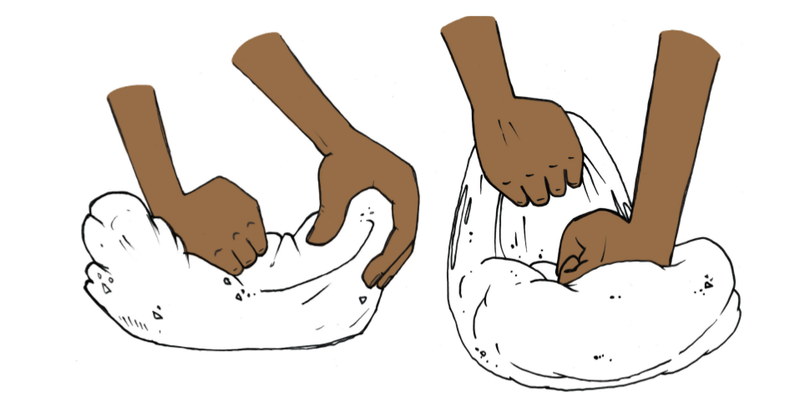
Figuur 1
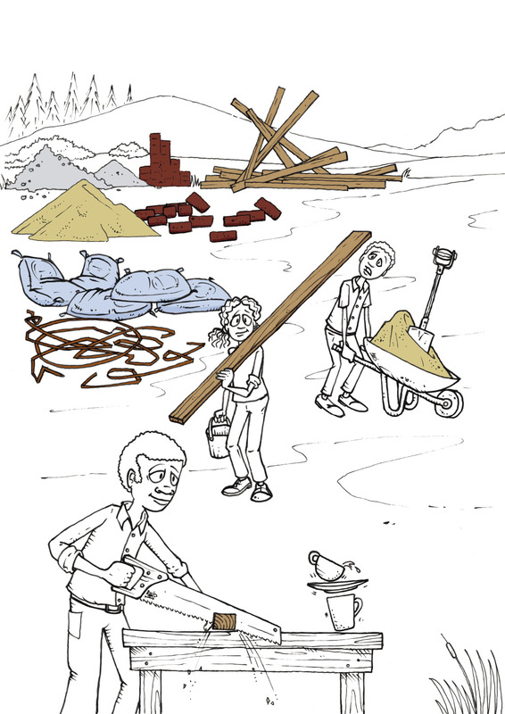
Figuur 2
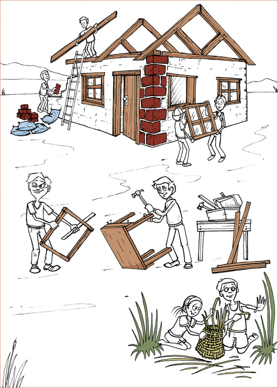
Figuur 3
Voorwerpe wat strukture genoem word
Kyk rond in die klaskamer. Kies enige voorwerp, byvoorbeeld ’n kas, ’n tafel, ’n
stoel, ’n mandjie, ’n bottel, ’n skoen, ’n potloodkissie of ’n baksteen. Beantwoord
dan die volgende vrae oor die voorwerp wat jy gekies het.
Wat word die voorwerp genoem?
Waarvoor word dit gebruik?
Kan dit gebruik word om spesifieke
dinge bymekaar te hou sodat hulle nie in die klaskamer rondlê
nie?
Kan die voorwerp gebruik word om iets te beskerm, byvoorbeeld teen sonlig of wind?
Word dit gebruik om iets te ondersteun?
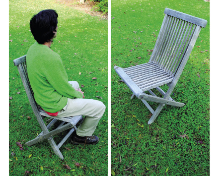
Figuur 4: Die stoel ondersteun die persoon wat daarop sit.
Hierdie man sit gemaklik op die stoel. Jy kan sê dat die stoel die man ondersteun en keer dat hy afval.
Beskryf ander voorwerpe wat van stoele verskil,
maar gebruik word om iets of iemand te ondersteun.
Figuur 5: Die brug oorspan die rivier.
’n Brug oor ’n rivier, wat van een oewer na die ander een gaan,
help mense om die
stroom oor te steek sonder om nat te word. Die brug oorspan die rivier.
Situasie: ’n spazawinkel
Veronderstel jy wil ’n
stalletjie by ’n mark oprig
om kos soos suiker, meel,
mielies, rys, eiers, bone
en kookolie te verkoop.
Voordat jy dit kan doen,
moet jy eers groot houers
suiker, meel, mielies, rys,
eiers en bone, asook ’n
20-liter drom kookolie
koop.
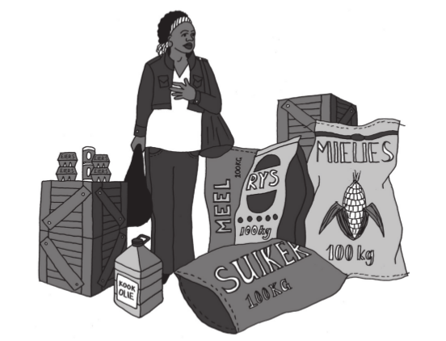
Figuur 6
Maak ’n lys van die voorwerpe wat jy in hierdie
prent kan sien.
Wat anders het jy nodig om jou stalletjie
op te rig voordat jy kan begin om die produkte te verkoop?
In watter soort houer sal die eiers wat
jy verkoop, gehou word?
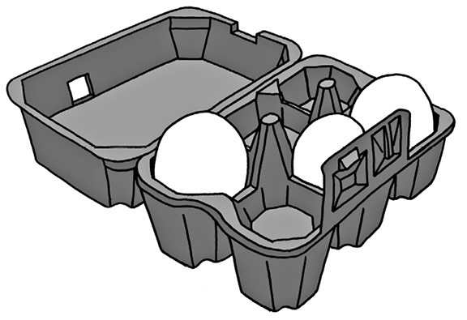
Figuur 7
Hoekom word eiers in spesiale houers verpak,
soos die een wat jy op die prent sien?
Wat het jy nog nodig om die twee leë kratte te
gebruik om ’n tydelike tafel te maak?
Veronderstel ’n vrou wil 2 kg meel by jou koop.
Sal jy haar vra om haar hande uit te steek sodat jy die meel in haar hande kan sit,
of sal jy ’n ander plan maak?
Wat sal jy as houers
gebruik as jy mielies, rys en meel aan mense verkoop?
'n Houer is iets wat jy gebruik om dinge in
een plek bymekaar te hou, soos ’n papiersak vir rys.
Wat sal jy as houer gebruik as jy olie verkoop?
Toe jy vraag 5 hierbo beantwoord het, wat
het jy besluit gaan jy gebruik om die twee kratte te oorspan om ’n tafel te vorm?
Die tafel wat jy gaan maak,
die kratte waarmee jy die tafel
maak, die houers waarin jy die
eiers kry en die plastiekbottels
waarin jy die olie verkoop word
struckture genoem.
Hoe sal jy jouself en die goedere wat jy verkoop teen reën beskerm? Teken die
struktuur wat jy as beskerming teen reën sal gebruik.
Mense ontwerp en maak strukture om
verskillende redes. Baie strukture kan jou
help om een of meer van die dinge wat hieronder genoem word te doen.
Om dinge binne en bymekaar te hou
sodat dit nie kan rondlê of uitval of uitvloei nie, en om dit
afsonderlik van ander produkte te hou.
Om iets te beskerm, sodat dit nie beskadig word nie.
Om iets te ondersteun en regop te hou.
Om die ruimte tussen twee voorwerpe te
oorspan
sodat hulle verbind word.
Kan jy aan ’n struktuur dink wat meer as een van hierdie dinge kan doen?
Mensgemaakte en natuurlike strukture
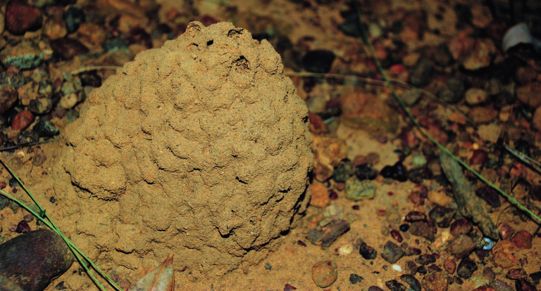
Figuur 8: ’n Rysmierhoop
Het jy al ooit van naby na ’n rysmierhoop gekyk?
Dit is werklik wonderlik hoe
dit die rysmiere en hulle kos teen die weer en hul vyande beskerm.
Binne so ’n miershoop is daar ’n hele stad!
Die materiaal (grond) word deur hulle verwerk om
kompak te word sodat dit
skokke kan weerstaan, terwyl die miershoop se vorm reën
toelaat om maklik af te loop.
Dit is ’n voorbeeld van ’n natuurlike struktuur. Dit is nie mensgemaak nie.
Mensgemaakte skuilings het dieselfde funksies:
om mense en hulle eiendom te
beskerm. Voor die bestaan van mensgemaakte skuilings soos huise en tente het
mense bome en grotte vir beskerming gebruik.
Om ons is daar baie verskillende strukture.
Party is deur mense gebou en ander
is reeds in die natuur teenwoordig. Die rysmierhoop is ’n struktuur, maar is nie
deur mense gebou nie. Sulke strukture noem ons “natuurlike strukture”.
’n Koppie waaruit jy tee of koffie drink is
ook ’n struktuur. Dit is ’n
“mensgemaakte struktuur” omdat die koppie deur mense gemaak is.
Kyk na die strukture op die volgende twee bladsye en klassifiseer hulle as
mensgemaakte strukture of
natuurlike strukture.
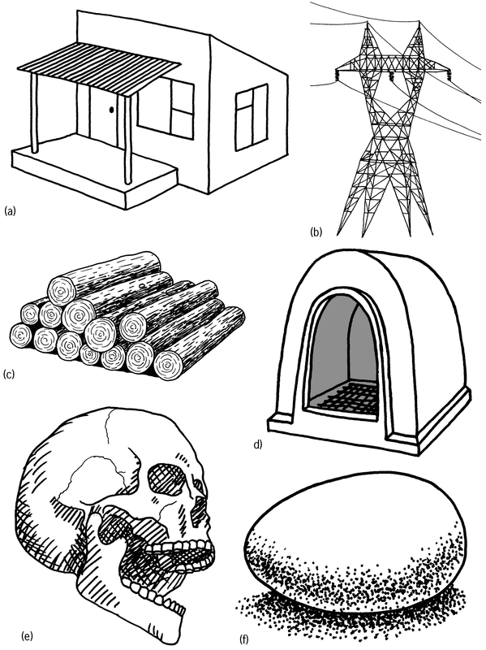
Figuur 9
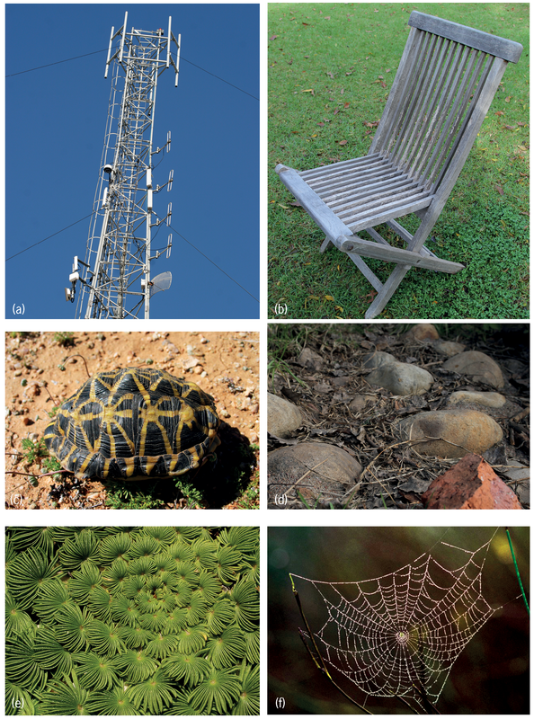
Figuur 10
Klassifiseer strukture
Klassifiseer die 12 strukture op die vorige twee bladsye as mensgemaakte of
natuurlike strukture.
Mensgemaakte
strukture
Natuurlikestrukture
Aan watter ander natuurlike strukture kan jy dink?
Noem enige drie mensgemaakte strukture wat
beskerming bied.
Noem enige drie mensegemaakte strukture wat
ondersteuning bied.
Noem enige drie mensgemaakte strukture waarin dinge
gehou kan word.
Verskillende soorte strukture
Daar is drie basiese soorte strukture:
dopstrukture,raamstrukture en soliede strukture
Daar is ook sommige strukture wat gemeng is.
Dopstrukture
Die meeste houers wat gebruik word om vloeistowwe of klein stukkies vaste
stowwe in te hou is dopstrukture. Voorbeelde hiervan is koffiebekers, bakkies vir
grondbone, en sakke vir rys of suiker.
Die sterkte van ’n dop struktuur is aan die buitekant daarvan - in die dop.
Hoendereiers en leë volstruiseierdoppe is voorbeelde van “natuurlike
dopstrukture”. Sokkerballe en ballonne is mensgemaakte strukture.
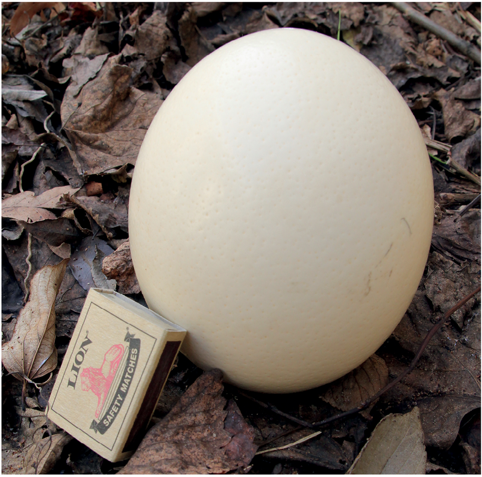
Figuur 11: Die San het volstruiseierdoppe as waterhouers gebruik.
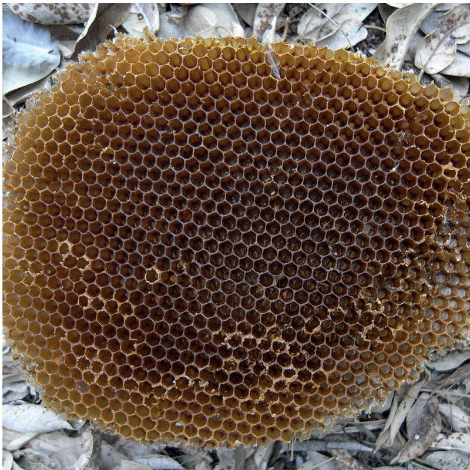
Figuur 12: Bye bewaar hul heuning in heuningkoeke.
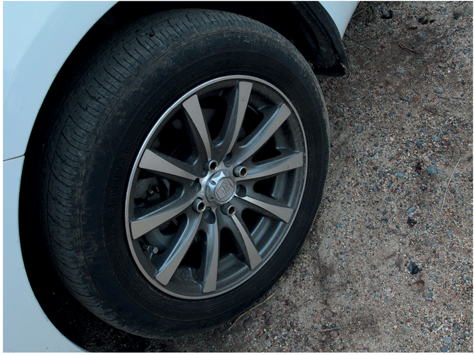
Figuur 13: ’n Rubberbuiteband is ’n dopstruktuur.
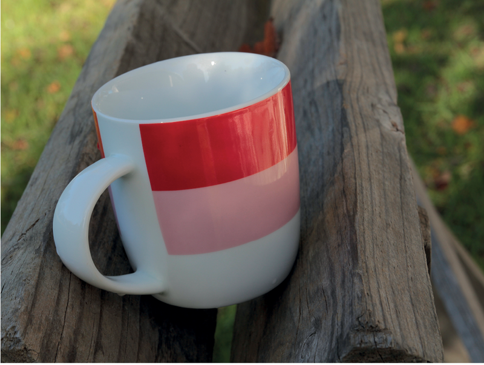
Figuur 14: ’n Koffiebeker is ’n dopstruktuur.
Raamstrukture
’n Raamstruktuur bestaan uit verskillende onderdele. Hierdie onderdele word op
so ’n manier saamgevoeg dat hulle die struktuur sterk maak. ’n Leer en ’n fiets is
goeie voorbeelde van mensgemaakte raamstrukture. Spinnerakke is natuurlike
raamstrukture.
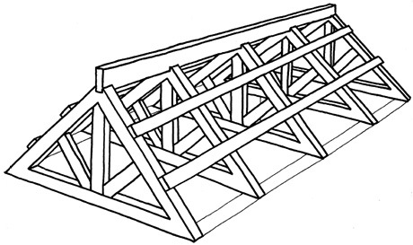
Figuur 15: Hierdie dakstruktuur van houtplanke is ’n
raamstruktuur wat uit natuurlike materiaal gemaak
is. Die planke ondersteun die dak.
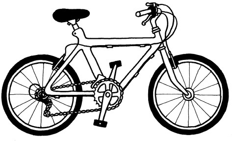
Figuur 16: ’n Fietsraam bestaan uit verskillende metaalpype.Fguur 17: ’n Blaar van ’n plant. Kyk na die
are - hulle vorm die raamwerk van die blaar.
Soliede strukture
Strukture soos rotse,
bakstene en sementpale is
solied. Hulle bestaan nie
uit verskillende dele met
oop spasies tussen hulle
nie. ’n Klip is ’n natuurlike
soliede struktuur en is een
stuk materiaal. ’n Baksteen
is ’n mensgemaakte soliede struktuur en is ’n soliede struktuur.
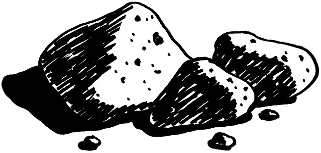
Figuur 18: Klippe
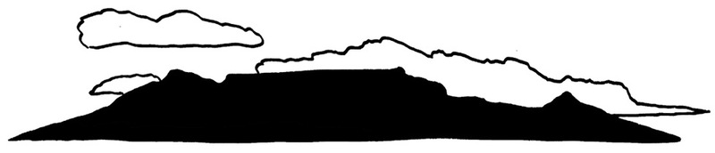
Figuur 19: Tafelberg
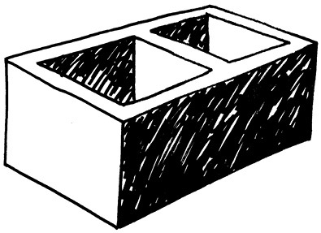
Figuur 20: ’n Sementsteen
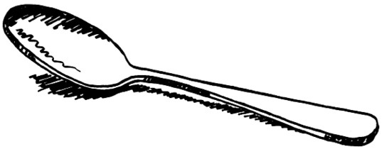
Figuur 21: ’n Teelepel
Saamgevoegde strukture
’n Huis is ’n goeie voorbeeld van ’n struktuur wat saamgevoeg is uit dop-, raam- en
soliede strukture.
Die bakstene, dakteëls of dakplate is almal soliede strukture.
Die verskillende kamers van die huis is ’n dopstruktuur.
Die raamwerk waarop die dakteëls of dakplate lê, word die dakkappe genoem,
en is raamstrukture.
Identifiseer struktuurtipes
Klassifiseer die strukture wat in die tabel hieronder genoem word as
dopstrukture, raamstrukture of soliede strukture:
’n huis, ’n elektrisiteitstoring, ’n skilpaddop, ’n selfoontoring, ’n menslike
skedel, ’n baksteen, ’n tuinstoel, ’n spinnerak en ’n hondehok, houtstompe,
hoendereiers en rotse. Jy kan op die vorige bladsye na prente van hierdie
strukture kyk.
Skryf meer voorbeelde van elk van die verskillende struktuursoorte in die tabel
neer.
Dopstruktuur
Raamstruktuur
Soliede
struktuur
Ondersteuning vir watertenks
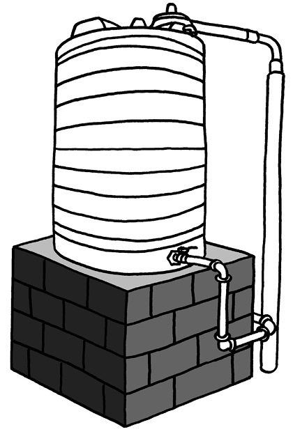
Figuur 22: ’n Watertenk op ’n soliede baksteenvoetstuk
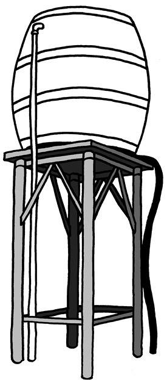
Figuur 23: ’n Watertenk op ’n metaalraamwerk as voetstuk
Noem al die strukture wat jy
in die prente hierbo sien. Sê in elke geval watter
soort struktuur dit is en wat die doel daarvan is.
Vergelyk die twee watertenks se ondersteunende strukture.
Watter voetstuk is ’n soliede struktuur en watter een ’n raamstruktuur?
Watter een van die voetstukke dink jy is die sterkste van die twee?
Verduidelik waarom jy so dink.
Maak ’n vryhandskets van die metaalraamvoetstuk en die tenk:
Volgende week
In die volgende hoofstuk gaan jy leer oor verskillende maniere om raamstrukture te versterk.